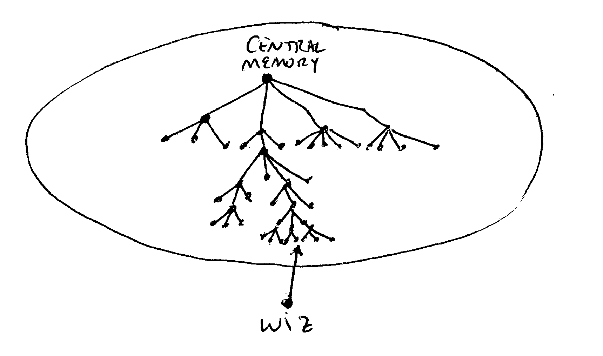
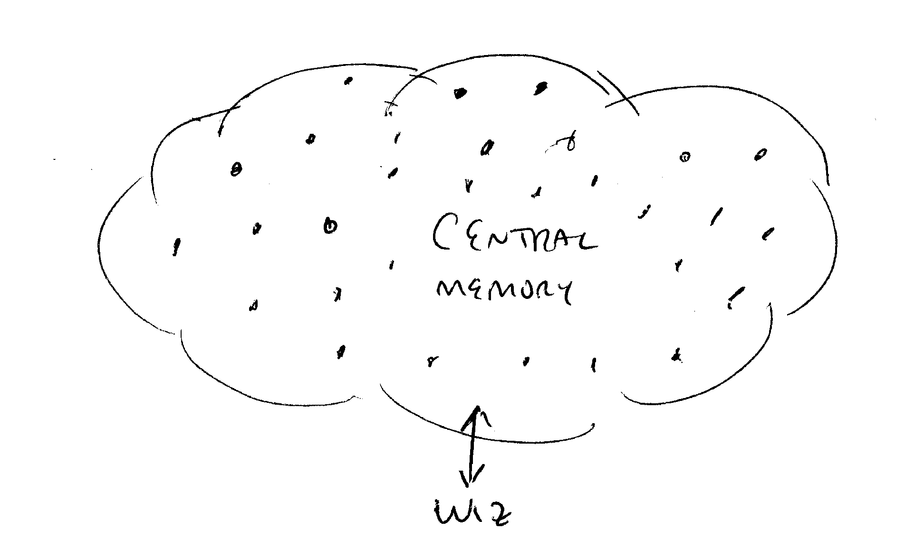

Imagine a very richly connected WIZ Central Memory network, with lots
of interconnections everywhere. The picture of a WIZ connecting to the
Central Memory should not look like this:


Suppose the director of a company sends a message to all company employees, in several major offices around the world. Presumably some of the network topology would include a large cache WIZ at each major office. The copy of the message at these nodes would be likely to stay fresh in the cache for awhile, as various employees read it at different times. After a few days, when everyone has read it, it would die in the caches at all the major office's main WIZes. Now suppose this message was mostly relevant to say the Boston office, and employees there continue to refer to it for a longer time than at the other offices. Then it would not die in the cache of that location's main WIZ.
The picture I am developing here is that cached memories will tend to die out where they are not used, and live long where they are used. Also, the network is likely to be configured to take advantage of common interests, that is, many WIZs accessing the same set of memories are likely to have hardware connections to a common WIZ, and WIZs having lots of data of a given type are likely to have hard connections to many WIZs needing that type of data. This all tends to highly optimize the caching structure and create high hit ratios at "intersections" in the network graph where data is shared.
And where data is not shared or not needed, it dies in the cache.
Thus: all memories will of their own accord move toward those locations on the net where they will be optimally placed! And they will tend toward having exactly the optimal number of copies at an optimal number of various places!
Its like water seeking its own level. Memories fade from where they are not needed, and become "more solid" in the cache where they are needed, and the system always flows toward an optimal situation!
Way cool, eh?
© 1999-2000 by Steve Bush